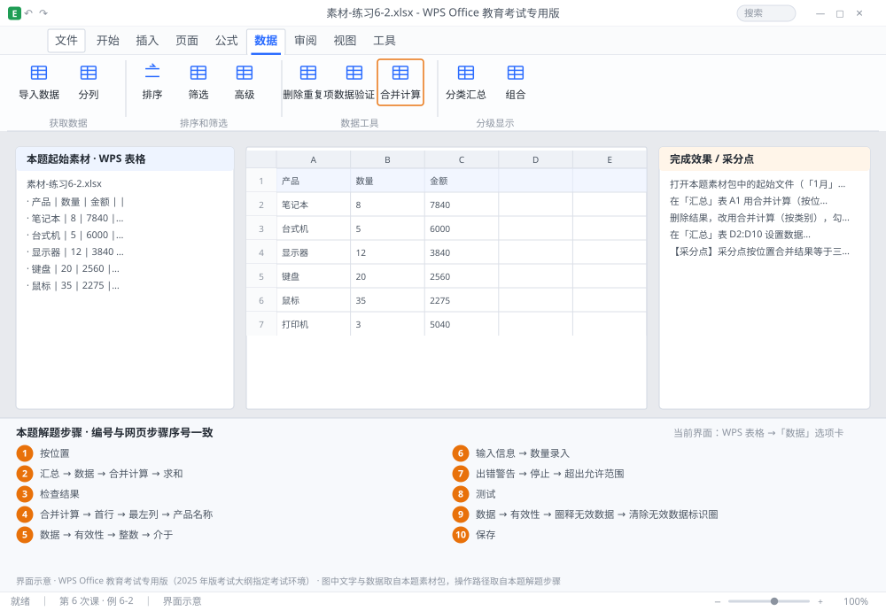

完成比对文档 · 例 6-2
合并计算（按位置/按类别）+ 数据有效性 + 圈释无效数据 ｜ 第 6 次课 / WPS 表格 ｜ 网页：实操-表格3.html ｜ 考试环境：WPS Office 教育考试专用版（2025 年版考试大纲指定考试环境）
用途 本页按修订后的题目要求与解题步骤生成，是交卷自查的结果基准：
逐项列出每一步应出现的可复核结果，配合模拟操作截图与解题结果文件使用。
它不是素材包的一部分，不会预置答案动作；起始素材仍从本题素材包下载。
一、本题起始素材包
目录：练习素材/练习6-2-合并计算与有效性/ ｜
下载包：练习素材/下载/练习6-2-合并计算与有效性.zip
二、题目要求
- 打开本题素材包中的起始文件（「1月」「2月」「3月」三张表结构相同，A 产品、B 数量、C 金额）。
- 在「汇总」表 A1 用合并计算（按位置）把三张表的数量与金额相加。
- 删除结果，改用合并计算（按类别），勾选「首行」与「最左列」重新汇总。
- 在「汇总」表 D2:D10 设置数据有效性：整数、介于 0 和 10000。
- 为有效性加输入信息：「请输入 0~10000 的整数」；出错警告：「超出允许范围」。
- 在 D3 故意输入 20000，用「圈释无效数据」把它圈出来。
- 保存为 学号-姓名-练习6-2.xlsx。
三、解题步骤（编号与下方核对表、截图编号一致）
- 确认结构一致。三张表的行列顺序完全相同，才能「按位置」合并。
- 按位置合并。切到「汇总」表 → 点 A1 →「数据」→「合并计算」→ 函数选「求和」→ 点「引用位置」右侧折叠按钮 → 选「1月」的 A1:C10 →「添加」→ 同样添加 2 月、3 月 → 确定。不勾「首行」「最左列」，即为按位置对应相加。
- 检查结果。汇总表的行数与产品顺序应与 1 月表完全一致，数值为三月之和。
- 按类别合并。先清除汇总结果，再「合并计算」→ 勾选「首行」与「最左列」→ 重新添加三个区域 → 确定。此时系统按「产品名称」匹配，即使三张表产品顺序不同也能正确相加。
- 设有效性。选中 D2:D10 →「数据」→「有效性」→ 允许「整数」→ 数据「介于」→ 最小值 0、最大值 10000。
- 加输入信息。切到「输入信息」选项卡 → 标题「数量录入」→ 输入信息「请输入 0~10000 的整数」→ 确定。选中单元格时会自动浮出提示。
- 加出错警告。切到「出错警告」选项卡 → 样式「停止」→ 标题「超出允许范围」→ 错误信息「请输入 0~10000 的整数」→ 确定。
- 测试。在 D3 输入 20000 → 应弹出警告并拒绝输入；若允许输入，说明有效性范围设错。
- 圈释。「数据」→「有效性」下拉 →「圈释无效数据」→ 无效值被红圈标出。再次点同一项可「清除无效数据标识圈」。
- 保存。Ctrl+S。
四、完成效果 / 采分点
采分点按位置合并结果等于三表之和 · 按类别合并勾选了首行与最左列 · D 列有效性为整数 0~10000 · 输入信息与出错警告文字正确 · 圈释无效数据可显示红圈
五、逐项完成核对表
| 步骤 | 关键操作路径 | 应出现的结果（可复核） |
|---|
| 1 | 确认结构一致 | 「按位置」 |
| 2 | 按位置合并 | 「汇总」、A1、「数据」、「合并计算」、「求和」 |
| 3 | 检查结果 | 检查结果 |
| 4 | 按类别合并 | 「合并计算」、「首行」、「最左列」、「产品名称」 |
| 5 | 设有效性 | D2:D10、「数据」、「有效性」、「整数」、「介于」 |
| 6 | 加输入信息 | 「输入信息」、「数量录入」 |
| 7 | 加出错警告 | 「出错警告」、「停止」、「超出允许范围」 |
| 8 | 测试 | D3 |
| 9 | 圈释 | 「数据」、「有效性」、「圈释无效数据」、「清除无效数据标识圈」 |
| 10 | 保存 | 保存 |
六、模拟操作截图

界面示意 · WPS Office 教育考试专用版 · 橙色编号与本题解题步骤序号一致；
图中文字与数据取自本题素材包，功能入口取自本题解题步骤。
核对方法：按网页解题步骤完成并另存自己的成稿后，逐行比对本表第 3 列的
参数、公式、区域、文件名与对象数量；再对照网页「完成效果 / 采分点」检查版式是否一致。